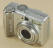

Fun Projects for your LEGO� MINDSTORMS� NXT!
|
|
Fun Projects for your LEGO� MINDSTORMS� NXT! |
Three Stages to Better Photos of LEGO Creations
| Using a tripod as in Stage 2
is important to getting sharp and detailed pictures of LEGOs.
However, the tricky part of using a tripod is managing the lighting.
Even with three or more external lights, trying to reduce dark areas,
over-bright areas, and shadows can be tricky and tedious because the
results will vary a lot depending on the lights you use and the shape of
your robot. In addition, getting the white balance right can be
tricky when using external lights mixed with room lighting. The ultimate solution to these problems, and the way to get fully professional results, is to use a light tent, such as the EZcube. The nylon material diffuses the lighting from external lights so that the light is well distributed evenly around the model and shadows are greatly reduced and softened. The models on nxtprograms.com are taken using the 30" EZcube, which is a good size for most LEGO robots, and the product conveniently folds up into a small pouch when you are not using it. If you get a light tent, you will also find it a convenient way to take excellent photos of any small "still life" objects for various reasons such as selling on eBay, etc. Choosing a BackgroundThe EZcube comes with a white background "sweep", but white does not work well as a background for NXT robots because the white LEGO pieces blend into the background too easily. For the same reason, you don't want a gray or black background. So, the photos on nxtprograms.com are taken using a light beige background. The actual background used is a sheet of pastel art paper, which has a nice matte (non-reflective) finish, and a very subtle texture to further break up shadows and reflections. Getting the Best Lighting
Although you can use any lighting with a light tent (even
just the camera's flash will produce better results if allowed to
reflect inside the tent), the best results will be obtained by using
three external lights with
daylight
florescent bulbs. This will ensure strong, even lighting, and
a perfect "white balance" that you won't need to adjust afterwards.
This whole setup can be bought
here
as a convenient kit, but you could also use your own lights. Using
this kit, you should place the two main lights directly on either side
of the light tent. For LEGO robots and parts, I suggest normally
placing the third accent light in front down low (on its stand without
the boom), with the EZcube's small round storage pouch placed over it to
diffuse it, as shown below.
You can also position or hold the third accent light wherever you want to get more light in certain areas for special situations. Finally, to get a perfect and consistent white balance with this setup, you should turn off the room lights and draw the shades to eliminate other light sources. An example of what happens if you forget this can be found in in Building Step 17 of the Car with Game Controller Project, where I added a picture afterwards as an intermediate step but forgot to turn off the room lights. |
|  | Light Tent Settings for Point and Shoot Cameras |
You can get excellent results with a Point and Shoot camera using a tripod and a light tent, and the settings are similar to the Tripod Settings for Point and Shoot Cameras, although you can get the camera a little closer. For the Canon A570, I used:
Using these settings on the Canon A570 results in the following photo: |
|
|
Light Tent Settings for SLR Cameras |
For convenience and consistency when taking multiple pictures in a light tent (such as when making the building instructions on nxtprograms.com), it is best to use an SLR camera in Manual exposure mode. You can make some test shots at different shutter speeds to determine the correct exposure for the lights you are using, then use these settings for all of your light tent photos. Most of the photos on nxtprograms.com are taken at the following settings:
Using these settings on the Nikon D200 gives the following result: |
|
|
||||
| EZcube with 3 daylight fluorescent lights (left, right, low front) | |||||
| No Flash | |||||
| Camera on tripod about 2 feet from robot | |||||
| Optical zoom to fill frame | Focal length 50mm | ||||
| Aperture Priority mode at f/8 | Manual exposure mode at f/16 for 1/1.6 (0.6) sec |
||||
| Sensitivity manual at ISO 80 | Auto ISO off, ISO 100 | ||||
| White Balance "Daylight" | White Balance 5000k | ||||
| Self-timer with 2 second delay | Self-timer with 2 second delay, or remote shutter release cable |
||||
| Resolution Large, Fine (normal) |
JPEG Large, Normal compression, but "Extra Sharp" |
||||
|
Use digital photo editing software to add Fill Light and/or Highlights afterwards as desired |
|||||
|
|
{kind=link}
{kind=link}